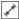
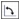

Быстрые ссылки на процедуры, описанные на этой странице:
• |
• |
• |
• |
• |
• |
Можно рисовать размерные линии, обозначающие расстояние между двумя точками на рисунке или размеры объектов. Можно добавить несколько типов размерных линий.
• |
Параллельные размерные линии измеряют фактическое расстояние между
двумя узлами.
|
• |
Вертикальные или горизонтальные размерные линии измеряют
вертикальное (ось Y) или горизонтальное (ось X) расстояние между
любыми двумя узлами.
|
• |
Угловые размерные линии измеряют углы.
|
• |
Размерные линии последовательных сегментов измеряют линейное
расстояние между конечными узлами сегмента или линейное расстояние
между двумя наиболее удаленными узлами в нескольких сегментах. С
помощью размерных линий сегментов можно также измерить выбранные
последовательные сегменты.
|
Размерные линии слева направо: по углу, горизонтали и вертикали
Можно настраивать способ отображения размерных линий и текста. Например, можно выбрать единицу измерения, задать положение и шрифт единиц измерения, а также добавить префикс или суффикс к размерному тексту. Можно также устанавливать значения по умолчанию для всех создаваемых размерных линий.
Можно настроить выносные линии, связанные с размерными линиями. Можно указать расстояние между выносными линиями и измеряемым объектом, а также длину выступа выносной линии. Выступ выносной линии — это часть выносной линии, которая выступает за стрелки размера.
Размерные линии можно настроить путем указания значений для выступа выносной линии, выносной линии и расстояния от объекта.
По умолчанию текст на размерной линии является динамическим: при изменении того размера объекта, к которому относится линия, текст на ней также изменяется и показывает новый размер. Однако текст на размерной линии можно сделать статическим, если это нужно.
Для использования точных размерных линий необходимо привязать их к определенным узлам объектов. Для получения дополнительных сведений о привязке и режимах привязки см. раздел Привязка объектов.
| Рисование вертикальных, горизонтальных или параллельных размерных линий |
1. |
Выполните одно из следующих действий.
|
• |
Чтобы нарисовать параллельную размерную линию, выберите
инструмент Параллельный размер  в наборе инструментов.
|
• |
Чтобы нарисовать вертикальную или горизонтальную размерную
линию, щелкните Размер по горизонтали или по вертикали .
|
2. |
Щелкните в том месте рисунка, где должна быть начальная точка, и
перетащите курсор в то место, где должна быть конечная точка
размерной линии.
|
3. |
Перемещайте указатель для перемещения размерной линии. Щелкните
мышкой, чтобы поместить текст размерной линии.
|
По умолчанию текст располагается по центру размерной линии. |
| Рисование угловых размерных линий |
1. |
В наборе инструментов щелкните стрелку в правом нижнем углу кнопки
Параллельный размер . Откроется выпадающее меню Инструменты
размера. Выберите в нем инструмент Угловой размер .
|
2. |
Щелкните в том месте, где должны пересекаться две линии измерения
угла, и перетащите туда, где должна заканчиваться первая линия.
|
3. |
Щелкните в том месте, где должна заканчиваться вторая линия.
|
4. |
Щелкните там, где нужно разместить метку угла.
|
| Рисование сегмента размерной линии |
1. |
В наборе инструментов щелкните стрелку в правом нижнем углу кнопки
Параллельный размер . Откроется выпадающее меню Инструменты
размера. Выберите в нем инструмент Размер сегмента |
2. |
Щелкните сегмент, который нужно измерить.
|
3. |
Переместите указатель туда, где нужно поместить размерную линию, и
щелкните там, где должен находиться размерный текст.
|
Размерные линии последовательных сегментов можно создать автоматически.
| Настройка показа единиц измерения |
1. |
Выберите размерную линию.
|
2. |
На панели свойств выберите параметры в следующих списках.
|
• |
Стиль размеров — выбор дробных, десятичных или стандартных
единиц размера.
|
• |
Точность размеров — выбор степени точности измерений.
|
• |
Единицы размеров — выбор единицы измерения.
|
| Установка свойств по умолчанию для создаваемых размерных линий |
1. |
В наборе инструментов дважды щелкните кнопку инструмента
Параллельный размер .
|
Появится страница Размер диалогового окна Параметры. |
2. |
Укажите стиль, точность и единицы размера, а также префикс и суффикс.
|
| Настройка выносных линий |
1. |
Выберите размерную линию.
|
2. |
На панели свойств нажмите кнопку Параметры выносных линий .
|
3. |
Чтобы указать расстояние между выносными линиями и объектом,
установите флажок Расстояние от объекта и введите значение в поле
Расстояние.
|
4. |
Чтобы указать длину выступа выносных линий, установите флажок
Выступ расширения и введите значение в поле Расстояние.
|
Copyright 2012 Corel Corporation. Все права защищены.